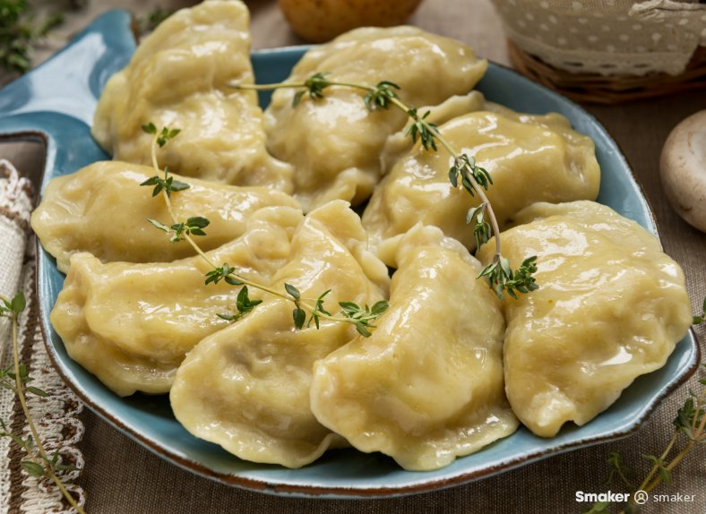

Dumplings

Description
This recipe has been a family favorite passed on from generation to generation. We traditionally make these for Christmas, but they can be made for any special event. There's some work involved, but the outcome is rewarding!
After the perogies have boiled, they can be fried in some butter and onions or served with sour cream
Ingredients
- 1 cup all-purpose flour
- 2 teaspoons baking powder
- 1 teaspoon white sugar
- ½ teaspoon salt
- 1 tablespoon margarine
- ½ cup milk
Steps
- Stir together flour, baking powder, sugar, and salt in a bowl
- Cut in butter until mixture is crumbly
- Stir in milk and mix until a batter forms that is thick enough to be scooped with a spoon
- Allow batter to rest for 3 to 5 minutes
- Cover and simmer without lifting the lid for 15 minutes
- Serve